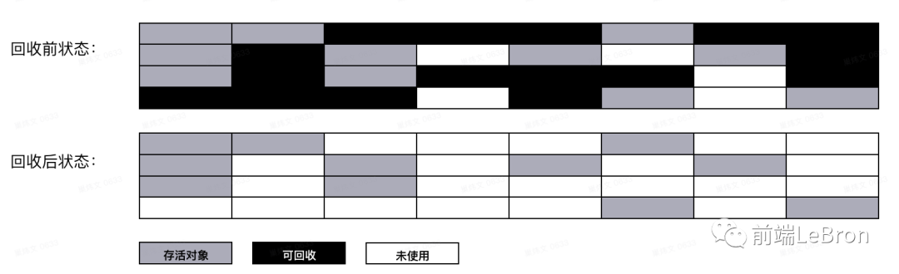
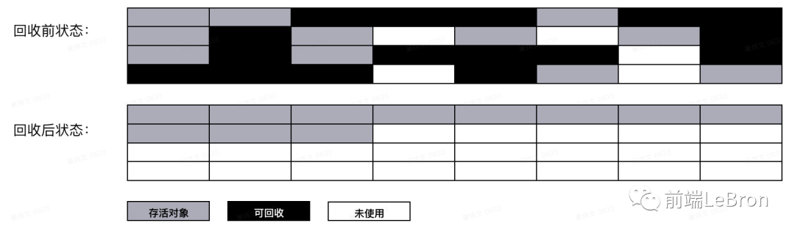

js有自动垃圾回收机制,垃圾收集器会每隔一段时间执行一次释放操作,找出那些不再使用的值,将其释放
垃圾回收算法的核心思想是找出不在使用的内存,将其释放,常见有两种方法;
看一个对象有没有其他引用,没有就说明没用,就被释放
1 | // 创建一个对象person，他有两个指向属性age和name的引用 |
引用计数的致命问题是存在循环引用时,将不会被释放
常见的dom操作也是循环引用
1 | function fn () { |
函数执行完毕,obj之间的引用依然存在,因此不会被回收
dom操作时,div引用事件函数,事件函数也引用div,因为函数内部能访问div
因此现在浏览器不再使用,但ie还在用
标记清除算法中将’不再使用的对象’定义为’无法触达的对象’,即从根部(全局对象)出发,无法触达的对象会被标记,稍后释放.无法触达的对象包括没有引用的对象,但有引用无法触达依旧会被清理(如上述循环引用).
标记-清除算法包含三个步骤：
标记清除算法的缺点地址不连续，空间碎片化；在V8引擎采用标记清除法与分代回收法,分代回收解决了这个问题。
假如B和A为被清理空间，B是两个域大小，A是一个域大小，此时新申请1.5个域大小，则B会空闲0.5，A不够用。
新生代垃圾回收采用Scavenge 算法；分配给常用内存和新分配的小量内存

新生代何时变为老生代：内存大小达到From space的25%；经历了From space <-> To space的一个轮回
老生代
老生代采用mark-sweep标记清除和mark-compact标记整理;通常存放较大的内存块和从新生代分配过来的内存块
内存大小
分区
回收流程

Mark-compact 标记整理
垃圾回收完成之后，内存空间是不连续的。
这样容易造成无法分配较大的内存空间的问题，从而触发垃圾回收。
所以，会有Mark-compact步骤将未被回收的内存块整理为连续的内存空间。
频繁触发垃圾回收会影响引擎的性能，内存空间不足时也会优先触发Mark-compact
内存不足时也会优先Mark-compact

Scavenge中只复制活着的对象，而Mark-Sweep只清理死亡对象。 活对象在新生代中只占较小部分，死对象在老生代中只占较小部分，这是两种回收方式能高效处理的原因。
对于持续运行的服务进程（daemon），必须及时释放不再用到的内存。否则，内存占用越来越高，轻则影响系统性能，重则导致进程崩溃。 对于不再用到的内存，没有及时释放，就叫做内存泄漏（memory leak）
最常见的内存泄漏多与dom操作有关
1 | let box = {} |
虽然dom元素在body中清除,但其引用还在box中,如果box存在,则该dom对象将不会被清除
意外的全局变量
1 | function fn () { |
未用var或let等声明的变量或函数内this指向全局时,定义的变量都会挂在全局,全局变量很难自动回收
被遗忘的计时器或回调函数
1 | setInterval(function () {}, 30) |
计时器不终止会一直存在;
回调在ie中属于循环引用,不会被处理,需remove监听;在现代浏览器中没事
闭包
1 | function fn () { |
形成闭包,需添加条件释放,否则将不会被回收
对象池（英语：object pool pattern）是一种设计模式。一个对象池包含一组已经初始化过且可以使用的对象，而可以在有需求时创建和销毁对象。池的用户可以从池子中取得对象，对其进行操作处理，并在不需要时归还给池子而非直接销毁它。这是一种特殊的工厂对象。
1、尽可能避免创建对象，非必要情况下避免调用会创建对象的方法，如 Array.slice、Array.map、Array.filter、字符串相加、$(‘div’)、ArrayBuffer.slice 等。
2、不再使用的对象，手动赋为 null，可避免循环引用等问题。
3、使用 Weakmap;对象为键,值可任意类型;作为对象的键属于弱引用(),随时能被回收;参考
强引用
我们常见的普通对象的引用 例如Object object = new Object();
特点：只要强引用指向一个对象，就表明这个对象是”活的”
弱引用
弱引用一旦被垃圾回收器检测到，就会被回收。
4、生产环境勿用 console.log 打印对象，包括 DOM、数组、ImageData、ArrayBuffer 等。因为 console.log 的对象不会被垃圾回收。
5、合理设计页面，按需创建对象/渲染页面/加载图片等,避免一次性请求全部数据,避免重复dom操作,避免一次性加载渲染大量全部图片。
6、ImageData 对象是 JS 内存杀手，避免重复创建 ImageData 对象。